how to convert
The numbers are units of counting, the way we represent them consists in write the respective digits in the right order, so we can read what that number is. The process of converting numeric bases consists in set how many digits are available to represent a specific numeral. We usually write numbers in the decimal base, witch means that there are ten digits (0 to 9) available, but what if we have eight or even two?
from decimal
To convert a number represented in the decimal base to any other base, there's a method that consists in divide the decimal number by the base that you want to convert, the base will be the amount of digits available. So, if you want to convert to binary base, two would be the digits available.
We will divide the number by the base that you want to convert to, and we continue the division by dividing the resulted quotient by the base until the quotient is less than the base. Once that happen, the last quotient concatenated with all the remainders, from the last to first, will be the converted number. For example, let's convert eleven to the binary base:
We also can use other division template that facilitates this conversion:
to decimal
To convert a number represented in any base to decimal, the method consists in add the products of each multiplication of each digit that compound the number by its base raise to the power of the digit's position. It is easer than it seems, first of all, the position of witch digit will be counted from right to left, starting from zero. So if we want to convert the number 523, the digit 3 is in the position zero, 2 is in the position 1 and 5 is in the position 3. Second, we'll multiply each digit by the base that will be raised to the power of the respective position we just figure out. Third, we'll add all these resulted products, see the example, converting 523 in the octal base to decimal:
